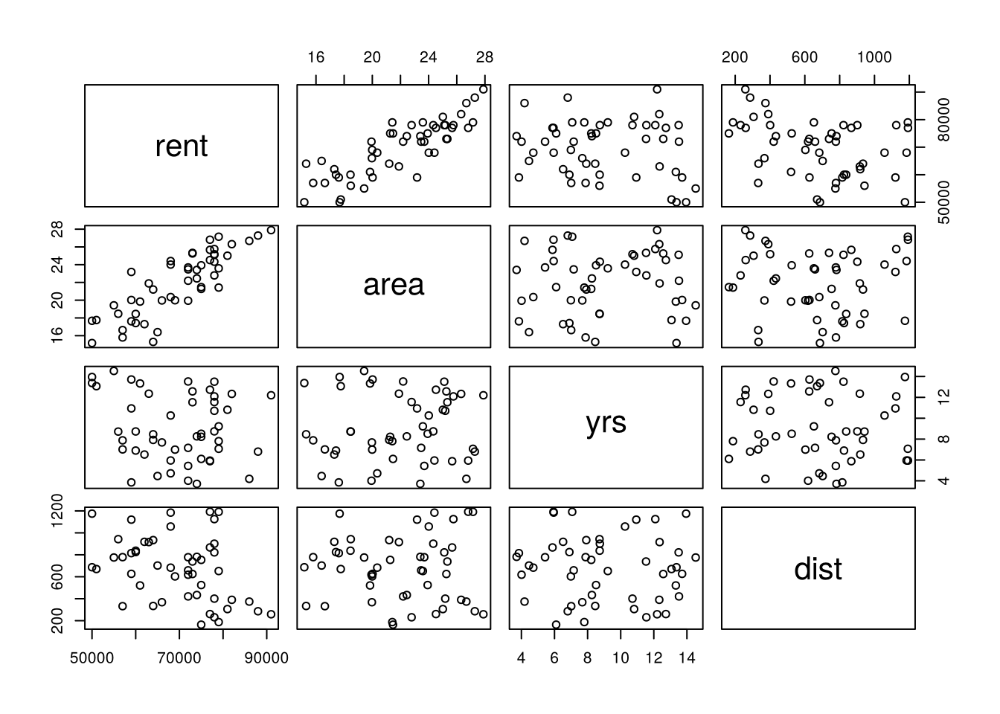
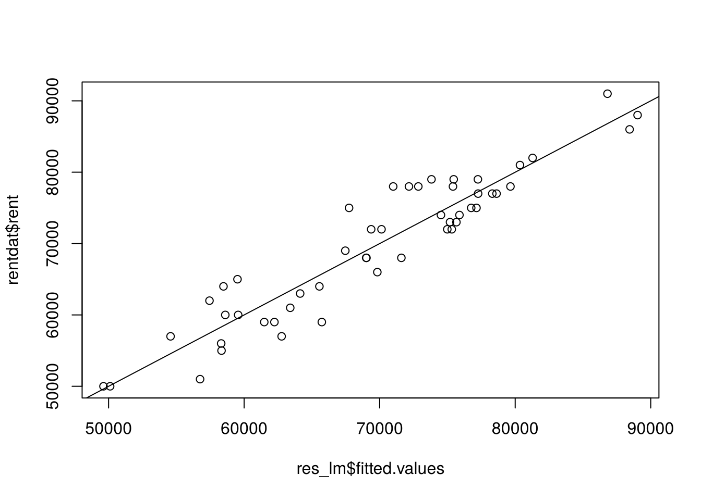
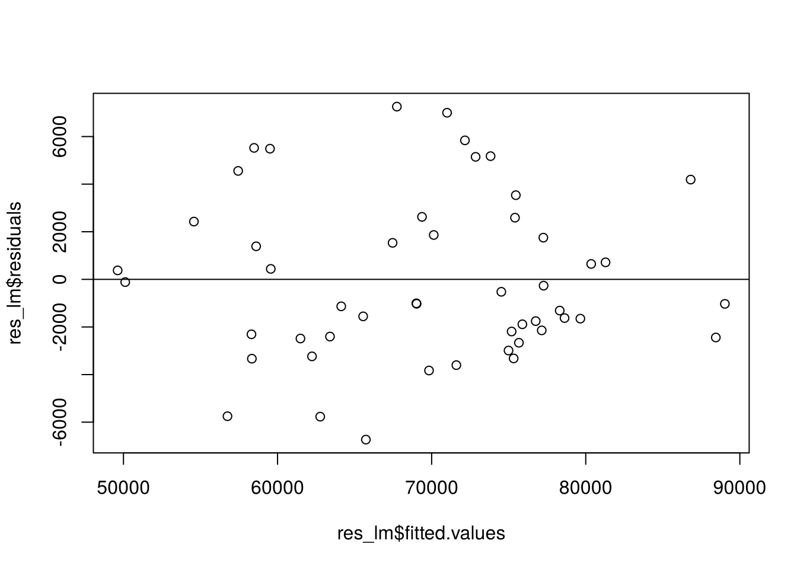
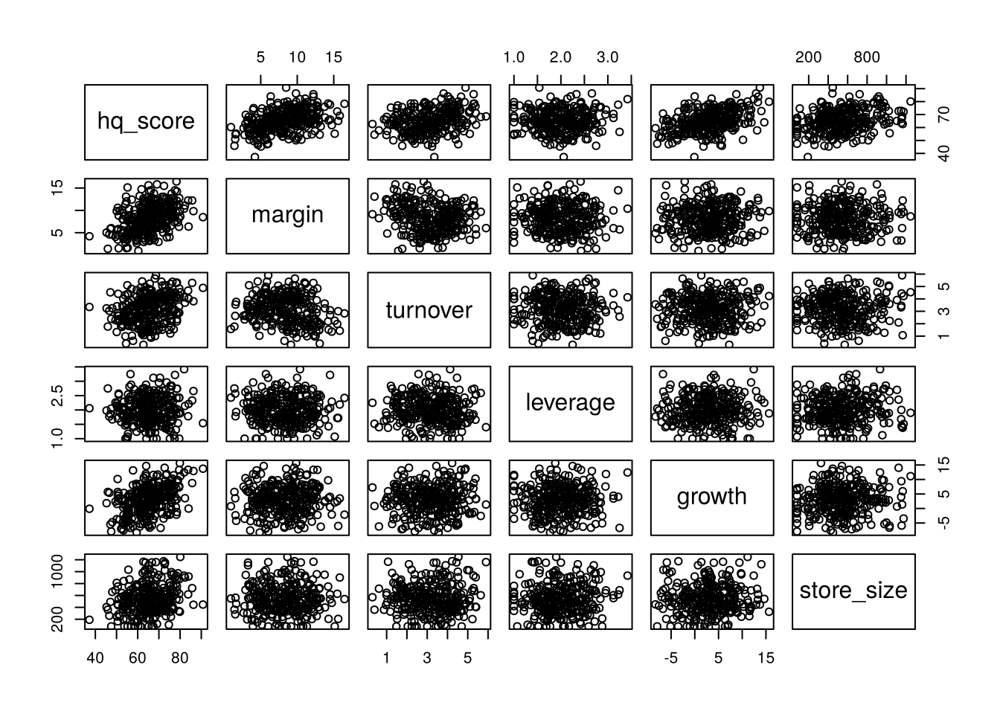
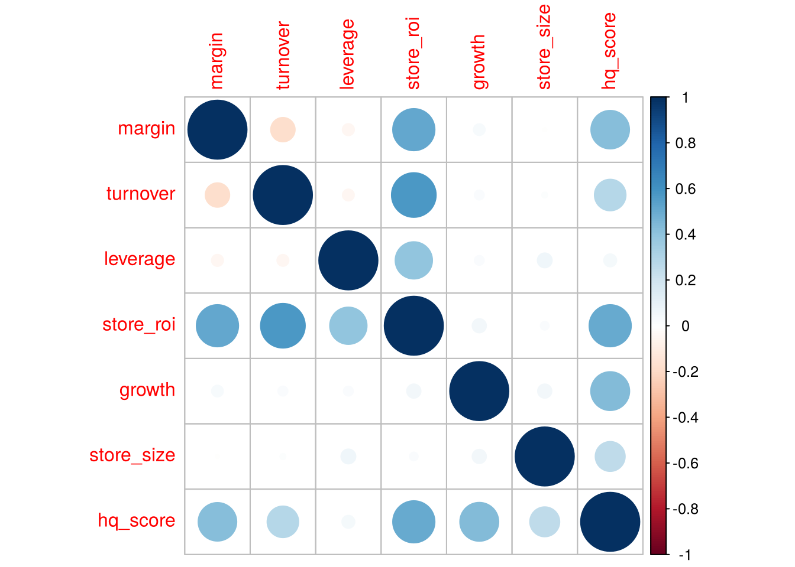
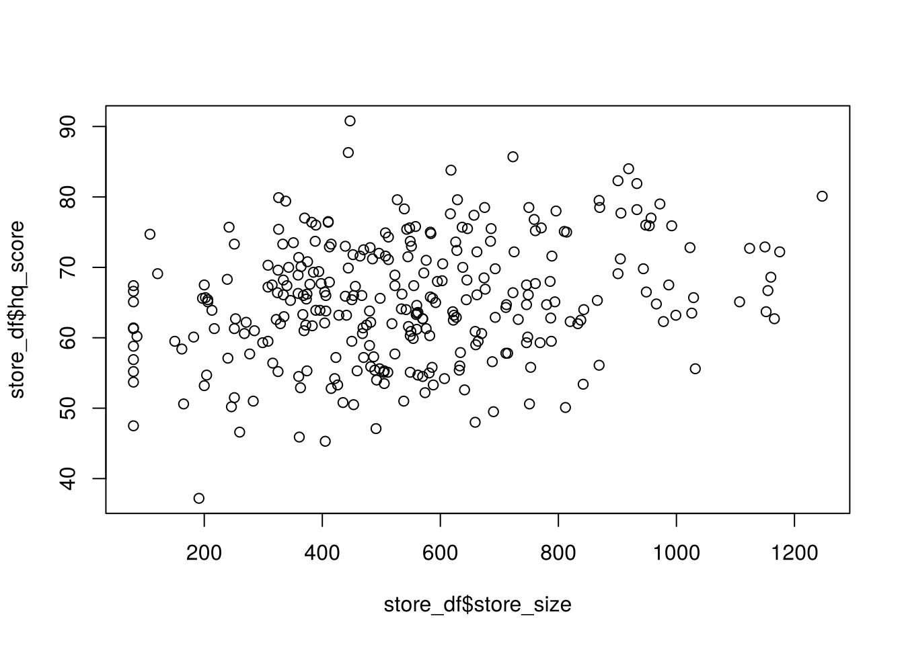
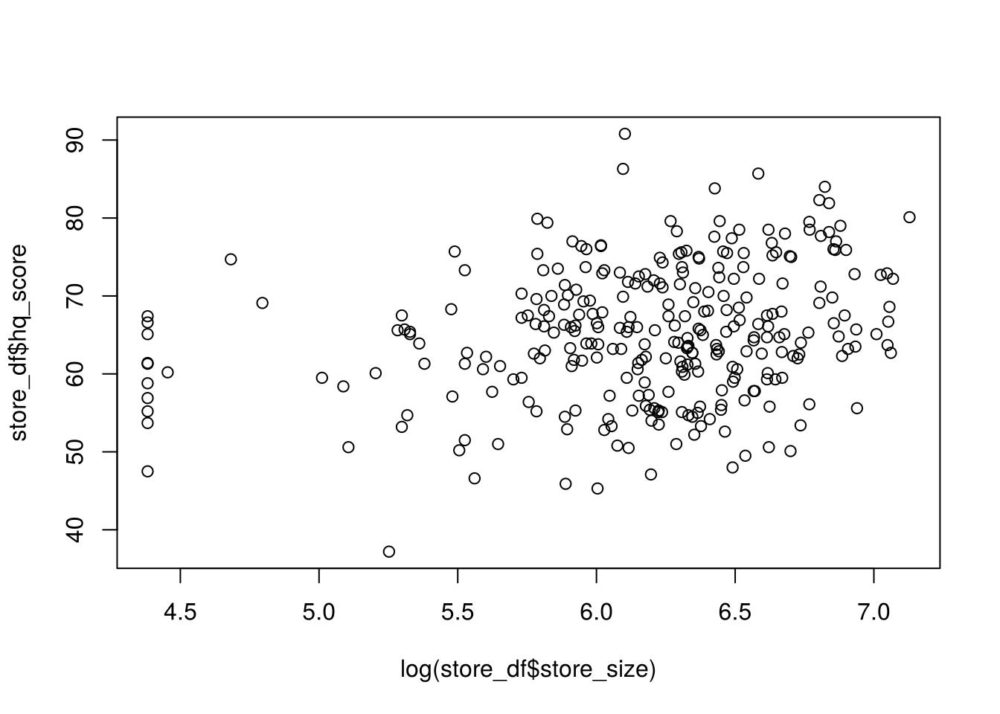
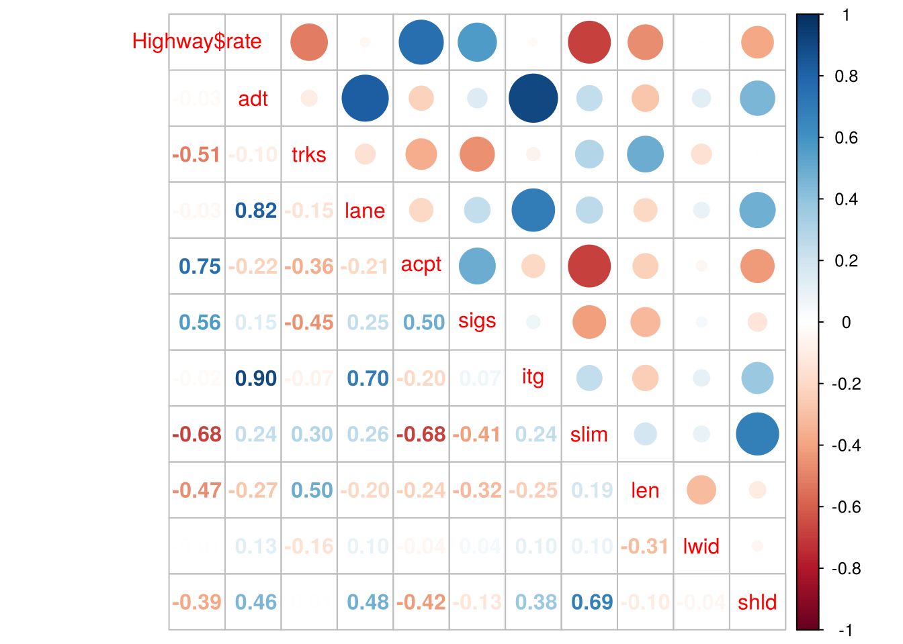

5 線形回帰 (1)
第3回の授業では, 線形回帰の基本的な使い方から, 複数の説明変数を使った回帰分析における
分析結果の見方・分散分析表の解釈・変数選択の考え方まで扱った. 本章では, 授業で用いた
R_linreg_dist.R の内容に沿って, lm() の基本操作を振り返るとともに, 授業では時間の
関係で途中までしか進めなかった変数選択の部分まで, 自習として一通り確認する.
5.1 基本操作
データセット1: 賃貸マンションの家賃データ
1ルーム賃貸マンションの家賃に関する, 50件の仮想データを使う.
rent: 月額家賃 (円)area: 専有面積 (平米)yrs: 築後年数 (年)dist: 最寄駅からの徒歩距離 (m)
rentdat <- read.csv("class/rentdat.csv", header = TRUE)
head(rentdat)
#> rent area yrs dist
#> 1 60000 18.45 8.73 837.46
#> 2 61000 19.84 13.33 520.86
#> 3 74000 22.45 8.26 433.77
#> 4 77000 26.81 5.94 1192.32
#> 5 59000 17.62 3.85 815.17
#> 6 86000 26.68 4.19 373.87
pairs(rentdat)
cor(rentdat)
#> rent area yrs dist
#> rent 1.0000000 0.84098526 -0.16885266 -0.36727009
#> area 0.8409853 1.00000000 0.05454398 -0.02291733
#> yrs -0.1688527 0.05454398 1.00000000 -0.05812975
#> dist -0.3672701 -0.02291733 -0.05812975 1.00000000散布図行列と相関行列を見ると, area (面積) が広いほど家賃は高く, yrs (築年数) や
dist (駅からの距離) が大きいほど家賃は低い, という直感的にも納得できる関係が見てとれる.
家賃 (rent) を, 面積・築年数・駅距離の3変数で説明する回帰モデルを当てはめる.
res_lm <- lm(rent ~ area + yrs + dist, data = rentdat)
summary(res_lm)
#>
#> Call:
#> lm(formula = rent ~ area + yrs + dist, data = rentdat)
#>
#> Residuals:
#> Min 1Q Median 3Q Max
#> -6732 -2379 -1016 2286 7256
#>
#> Coefficients:
#> Estimate Std. Error t value Pr(>|t|)
#> (Intercept) 32261.469 3652.405 8.833 1.81e-11 ***
#> area 2397.144 142.744 16.793 < 2e-16 ***
#> yrs -745.440 159.275 -4.680 2.55e-05 ***
#> dist -12.443 1.733 -7.180 4.89e-09 ***
#> ---
#> Signif. codes: 0 '***' 0.001 '**' 0.01 '*' 0.05 '.' 0.1 ' ' 1
#>
#> Residual standard error: 3531 on 46 degrees of freedom
#> Multiple R-squared: 0.8838, Adjusted R-squared: 0.8762
#> F-statistic: 116.6 on 3 and 46 DF, p-value: < 2.2e-16いずれの変数も1%水準で有意であり, 面積が広いほど, 築年数・駅距離が小さいほど家賃が 高くなるという, 想定どおりの符号が得られている. 補正\(R^2\)は0.876であり, モデルの 当てはまりも良好である.
推定結果の取り出し方
lm() の返り値 (ここでは res_lm) には, 推定に関する様々な情報が格納されている.
これらは専用の関数で取り出すことができ, リスト要素として $ で直接指定することもできる.
# 回帰係数の取り出し
coef(res_lm)
#> (Intercept) area yrs dist
#> 32261.46944 2397.14374 -745.44017 -12.44341
res_lm$coef # 省略形による指定も可能
#> (Intercept) area yrs dist
#> 32261.46944 2397.14374 -745.44017 -12.44341
# 適合値 (予測値) の取り出し
fitted(res_lm)
#> 1 2 3 4 5 6 7 8
#> 59560.22 63402.81 74522.43 77264.45 61485.70 88441.65 89029.73 73823.78
#> 9 10 11 12 13 14 15 16
#> 65732.04 54572.59 49623.32 57444.01 76754.11 67465.75 80352.87 77143.60
#> 17 18 19 20 21 22 23 24
#> 72853.08 86808.81 69373.81 72160.45 77248.21 56750.15 74990.22 62767.85
#> 25 26 27 28 29 30 31 32
#> 58307.81 62235.39 50114.34 69829.27 81284.99 58332.89 67743.59 75409.11
#> 33 34 35 36 37 38 39 40
#> 75462.96 58611.11 71000.06 75321.09 75191.14 59510.58 71603.02 69025.77
#> 41 42 43 44 45 46 47 48
#> 78625.39 75887.00 79650.44 70136.19 64133.33 75663.52 58476.74 65554.51
#> 49 50
#> 78311.71 69006.41
# res_lm$fitted # 同じ結果
# 残差の取り出し
resid(res_lm)
#> 1 2 3 4 5 6 7
#> 439.7807 -2402.8084 -522.4320 -264.4500 -2485.7017 -2441.6518 -1029.7327
#> 8 9 10 11 12 13 14
#> 5176.2213 -6732.0408 2427.4126 376.6794 4555.9941 -1754.1073 1534.2533
#> 15 16 17 18 19 20 21
#> 647.1293 -2143.6007 5146.9150 4191.1927 2626.1939 5839.5466 1751.7939
#> 22 23 24 25 26 27 28
#> -5750.1494 -2990.2238 -5767.8528 -2307.8140 -3235.3851 -114.3409 -3829.2694
#> 29 30 31 32 33 34 35
#> 715.0065 -3332.8895 7256.4052 2590.8913 3537.0448 1388.8917 6999.9397
#> 36 37 38 39 40 41 42
#> -3321.0903 -2191.1362 5489.4176 -3603.0246 -1025.7680 -1625.3943 -1887.0020
#> 43 44 45 46 47 48 49
#> -1650.4408 1863.8094 -1133.3323 -2663.5164 5523.2614 -1554.5109 -1311.7071
#> 50
#> -1006.4070
# res_lm$resid # 同じ結果
# 回帰係数の信頼区間
confint(res_lm)
#> 2.5 % 97.5 %
#> (Intercept) 24909.55913 39613.379763
#> area 2109.81414 2684.473338
#> yrs -1066.04436 -424.835985
#> dist -15.93178 -8.955039モデル診断
回帰モデルが適切に当てはまっているかどうかは, 観測値と適合値の関係や, 適合値と残差の 関係を図示して確認するのが基本である.


観測値と適合値の散布図が対角線 (傾き1, 切片0の直線) の近くに集まっていれば, モデルの 当てはまりは良好である. また, 適合値と残差の散布図に特定のパターン (扇形に広がる, 曲線を描くなど) が見られないことが, 等分散性や線形性の仮定が妥当であることの目安になる.
R には, 回帰診断のための複数のプロットをまとめて出力する plot(lm object) も用意されている.
予測
当てはめたモデルを用いて, 予測値を計算することができる. データに含まれる観測値に対する
予測 (内挿予測) は predict() に何も指定しなければ得られ, これは適合値そのものである.
predict(res_lm) # 内挿予測 (適合値と同じ)
#> 1 2 3 4 5 6 7 8
#> 59560.22 63402.81 74522.43 77264.45 61485.70 88441.65 89029.73 73823.78
#> 9 10 11 12 13 14 15 16
#> 65732.04 54572.59 49623.32 57444.01 76754.11 67465.75 80352.87 77143.60
#> 17 18 19 20 21 22 23 24
#> 72853.08 86808.81 69373.81 72160.45 77248.21 56750.15 74990.22 62767.85
#> 25 26 27 28 29 30 31 32
#> 58307.81 62235.39 50114.34 69829.27 81284.99 58332.89 67743.59 75409.11
#> 33 34 35 36 37 38 39 40
#> 75462.96 58611.11 71000.06 75321.09 75191.14 59510.58 71603.02 69025.77
#> 41 42 43 44 45 46 47 48
#> 78625.39 75887.00 79650.44 70136.19 64133.33 75663.52 58476.74 65554.51
#> 49 50
#> 78311.71 69006.41新しいデータに対する予測 (外挿予測) をしたい場合は, newdata 引数に説明変数の値を
指定したデータフレームを渡す.
new <- data.frame(area = 18.8, dist = c(800, 100), yrs = 13)
predict(res_lm, newdata = new)
#> 1 2
#> 57682.32 66392.71面積18.8平米, 築13年の物件について, 駅から800mの場合は約5.8万円, 100mの場合は 約6.6万円という予測値が得られる.
標準(化)回帰係数
説明変数の単位が異なる場合, 回帰係数の大きさをそのまま比較することはできない (例えば, 面積1平米あたりの効果と, 距離1mあたりの効果を単純比較できない). そこで, すべての変数を平均0・分散1に標準化してから回帰を行うと, 各説明変数が 目的変数に与える影響の相対的な大きさを比較できる.
srentdat <- data.frame(scale(rentdat))
sres_lm <- lm(rent ~ area + yrs + dist, data = srentdat)
summary(sres_lm)$coef
#> Estimate Std. Error t value Pr(>|t|)
#> (Intercept) 8.657426e-17 0.04976173 1.739776e-15 1.000000e+00
#> area 8.455702e-01 0.05035176 1.679326e+01 3.002396e-21
#> yrs -2.359937e-01 0.05042380 -4.680205e+00 2.548844e-05
#> dist -3.616101e-01 0.05036197 -7.180222e+00 4.893016e-09標準化回帰係数は, 元のデータの標準偏差を使って, 元の回帰係数から直接計算することもできる.
y_sd <- sd(rentdat$rent)
x_sd <- apply(rentdat[, -1], 2, sd)
res_lm$coef[-1] * x_sd/y_sd
#> area yrs dist
#> 0.8455702 -0.2359937 -0.3616101標準化回帰係数の絶対値を比較すると, area (面積) が家賃への影響が最も大きく,
次いで dist (駅距離), yrs (築年数) の順であることが分かる.
5.2 分析結果の見方・分散分析表・変数選択
データセット2: 小売チェーンの店舗パフォーマンスデータ
全国展開する小売チェーンの, 300店舗の仮想データを使う. 店舗の収益性 (利益率・回転率・ レバレッジ) と, 成長性・規模・業態・立地から, 本部による店舗総合評価スコアを説明する, という設定である.
store_roi (%) = margin × turnover × leverage
という, ROE (自己資本利益率) のデュポン分解と同型の恒等式が成り立つようにデータが 作られている点に注意したい (この点は, 後の多重共線性の議論でも重要になる).
hq_score: 本部による店舗総合評価スコア (0–100, 目的変数)margin: 営業利益率 (%)turnover: 資産回転率 (売上高 / 店舗資産, 回)leverage: 投資レバレッジ (店舗資産 / 自己資本相当額, 倍)store_roi: margin×turnover×leverageで決まる収益性指標 (%)growth: 売上成長率 (前年比, %)store_size: 売場面積 (平米)format: 業態 (“スーパー”, “コンビニ”, “ドラッグストア”)flagship: 旗艦店ダミー (1: 主要都市中心部の旗艦店, 0: それ以外)
store_df <- read.csv("class/store_perf.csv", header = TRUE)
store_df$format <- factor(store_df$format)
summary(store_df)
#> store_id format flagship margin
#> Min. : 1.00 コンビニ : 99 Min. :0.00 Min. : 0.920
#> 1st Qu.: 75.75 スーパー :130 1st Qu.:0.00 1st Qu.: 5.700
#> Median :150.50 ドラッグストア: 71 Median :0.00 Median : 8.255
#> Mean :150.50 Mean :0.14 Mean : 8.209
#> 3rd Qu.:225.25 3rd Qu.:0.00 3rd Qu.:10.430
#> Max. :300.00 Max. :1.00 Max. :16.470
#> turnover leverage store_roi growth
#> Min. :0.300 Min. :1.000 Min. : 3.51 Min. :-8.290
#> 1st Qu.:2.355 1st Qu.:1.670 1st Qu.: 30.71 1st Qu.:-0.380
#> Median :3.245 Median :1.985 Median : 45.27 Median : 3.150
#> Mean :3.192 Mean :2.007 Mean : 51.18 Mean : 2.994
#> 3rd Qu.:4.013 3rd Qu.:2.340 3rd Qu.: 65.15 3rd Qu.: 6.305
#> Max. :5.900 Max. :3.420 Max. :160.20 Max. :15.660
#> store_size hq_score
#> Min. : 80.0 Min. :37.20
#> 1st Qu.: 372.8 1st Qu.:59.50
#> Median : 525.0 Median :65.20
#> Mean : 543.4 Mean :65.21
#> 3rd Qu.: 686.5 3rd Qu.:71.53
#> Max. :1247.0 Max. :90.80
round(cor(store_df[, c("hq_score", "store_roi", "margin", "turnover", "leverage",
"growth", "store_size")]), 2)
#> hq_score store_roi margin turnover leverage growth store_size
#> hq_score 1.00 0.51 0.43 0.29 0.05 0.43 0.26
#> store_roi 0.51 1.00 0.51 0.57 0.40 0.06 0.02
#> margin 0.43 0.51 1.00 -0.17 -0.04 0.04 -0.01
#> turnover 0.29 0.57 -0.17 1.00 -0.04 0.03 0.01
#> leverage 0.05 0.40 -0.04 -0.04 1.00 0.03 0.06
#> growth 0.43 0.06 0.04 0.03 0.03 1.00 0.06
#> store_size 0.26 0.02 -0.01 0.01 0.06 0.06 1.00
分析結果の見方
収益性の3要素 (利益率・回転率・レバレッジ) で hq_score を説明するモデルを当てはめる.
res_mod1 <- lm(hq_score ~ margin + turnover + leverage, data = store_df)
summary(res_mod1)
#>
#> Call:
#> lm(formula = hq_score ~ margin + turnover + leverage, data = store_df)
#>
#> Residuals:
#> Min 1Q Median 3Q Max
#> -23.1094 -4.9411 0.2965 4.0382 21.1036
#>
#> Coefficients:
#> Estimate Std. Error t value Pr(>|t|)
#> (Intercept) 41.9954 2.5708 16.335 < 2e-16 ***
#> margin 1.3552 0.1336 10.147 < 2e-16 ***
#> turnover 2.8390 0.3698 7.676 2.4e-13 ***
#> leverage 1.5104 0.8652 1.746 0.0819 .
#> ---
#> Signif. codes: 0 '***' 0.001 '**' 0.01 '*' 0.05 '.' 0.1 ' ' 1
#>
#> Residual standard error: 7.05 on 296 degrees of freedom
#> Multiple R-squared: 0.3213, Adjusted R-squared: 0.3145
#> F-statistic: 46.72 on 3 and 296 DF, p-value: < 2.2e-16本部は, 利益率・回転率による収益性は高く評価しているが, レバレッジによる収益性は (統計的に有意ではなく) さほど評価していない, と読み取れる.
説明変数の順番を入れ替えても, 回帰係数の推定結果自体は変わらない.
res_mod2 <- lm(hq_score ~ turnover + margin + leverage, data = store_df)
summary(res_mod2)$coef
#> Estimate Std. Error t value Pr(>|t|)
#> (Intercept) 41.995446 2.5708169 16.335448 3.309842e-43
#> turnover 2.838956 0.3698395 7.676186 2.398734e-13
#> margin 1.355234 0.1335559 10.147319 5.865125e-21
#> leverage 1.510407 0.8651980 1.745735 8.189450e-02分散分析表の利用
一方, anova() による分散分析表は, 説明変数を1つずつ順番に投入していった際の,
各変数が追加的に説明する変動 (平方和) を示すものであり, 変数の投入順序に依存する.
anova(res_mod1) # margin, turnover, leverage の順
#> Analysis of Variance Table
#>
#> Response: hq_score
#> Df Sum Sq Mean Sq F value Pr(>F)
#> margin 1 3942.7 3942.7 79.3353 < 2.2e-16 ***
#> turnover 1 2870.9 2870.9 57.7698 3.915e-13 ***
#> leverage 1 151.5 151.5 3.0476 0.08189 .
#> Residuals 296 14710.1 49.7
#> ---
#> Signif. codes: 0 '***' 0.001 '**' 0.01 '*' 0.05 '.' 0.1 ' ' 1
anova(res_mod2) # turnover, margin, leverage の順
#> Analysis of Variance Table
#>
#> Response: hq_score
#> Df Sum Sq Mean Sq F value Pr(>F)
#> turnover 1 1770.5 1770.5 35.6262 6.826e-09 ***
#> margin 1 5043.1 5043.1 101.4788 < 2.2e-16 ***
#> leverage 1 151.5 151.5 3.0476 0.08189 .
#> Residuals 296 14710.1 49.7
#> ---
#> Signif. codes: 0 '***' 0.001 '**' 0.01 '*' 0.05 '.' 0.1 ' ' 1margin と turnover の行の平方和を2つの表で比較すると, 順序によって値が異なっている
ことが分かる. これは, 説明変数どうしに相関がある (完全に直交していない) ために生じる現象
であり, 分散分析表を読む際には, どの順序で投入されたモデルかを必ず確認する必要がある.
モデルの比較: 変数(組)を追加する・しないの判断
ある変数 (組) を追加することで, モデルの説明力が統計的に有意に向上するかどうかは,
入れ子 (ネスト) 関係にある2つのモデルを anova() で比較することで検定できる.
res_mod3 <- lm(hq_score ~ margin + turnover + leverage, data = store_df)
res_mod4 <- lm(hq_score ~ margin + turnover + leverage + growth + log(store_size),
data = store_df)
anova(res_mod3, res_mod4) # growth, log(store_size) の2変数の追加的な寄与を検定
#> Analysis of Variance Table
#>
#> Model 1: hq_score ~ margin + turnover + leverage
#> Model 2: hq_score ~ margin + turnover + leverage + growth + log(store_size)
#> Res.Df RSS Df Sum of Sq F Pr(>F)
#> 1 296 14710
#> 2 294 10197 2 4513.1 65.061 < 2.2e-16 ***
#> ---
#> Signif. codes: 0 '***' 0.001 '**' 0.01 '*' 0.05 '.' 0.1 ' ' 1p値が非常に小さく, growth (成長率) と log(store_size) (対数売場面積) の2変数を
追加することで, モデルの説明力が統計的に有意に向上していることが分かる.
変数選択
ここから, モデルに変数を1つずつ追加していく過程を具体的に見ていく.
res_lm1 <- lm(hq_score ~ margin + turnover + leverage, data = store_df)
anova(res_lm1)
#> Analysis of Variance Table
#>
#> Response: hq_score
#> Df Sum Sq Mean Sq F value Pr(>F)
#> margin 1 3942.7 3942.7 79.3353 < 2.2e-16 ***
#> turnover 1 2870.9 2870.9 57.7698 3.915e-13 ***
#> leverage 1 151.5 151.5 3.0476 0.08189 .
#> Residuals 296 14710.1 49.7
#> ---
#> Signif. codes: 0 '***' 0.001 '**' 0.01 '*' 0.05 '.' 0.1 ' ' 1
res_lm2 <- update(res_lm1, . ~ . + growth)
anova(res_lm2)
#> Analysis of Variance Table
#>
#> Response: hq_score
#> Df Sum Sq Mean Sq F value Pr(>F)
#> margin 1 3942.7 3942.7 103.7581 < 2.2e-16 ***
#> turnover 1 2870.9 2870.9 75.5538 2.51e-16 ***
#> leverage 1 151.5 151.5 3.9858 0.0468 *
#> growth 1 3500.5 3500.5 92.1216 < 2.2e-16 ***
#> Residuals 295 11209.6 38.0
#> ---
#> Signif. codes: 0 '***' 0.001 '**' 0.01 '*' 0.05 '.' 0.1 ' ' 1
res_lm3 <- update(res_lm2, . ~ . + flagship)
anova(res_lm3)
#> Analysis of Variance Table
#>
#> Response: hq_score
#> Df Sum Sq Mean Sq F value Pr(>F)
#> margin 1 3942.7 3942.7 110.3902 < 2.2e-16 ***
#> turnover 1 2870.9 2870.9 80.3831 < 2.2e-16 ***
#> leverage 1 151.5 151.5 4.2405 0.04035 *
#> growth 1 3500.5 3500.5 98.0099 < 2.2e-16 ***
#> flagship 1 709.2 709.2 19.8561 1.188e-05 ***
#> Residuals 294 10500.5 35.7
#> ---
#> Signif. codes: 0 '***' 0.001 '**' 0.01 '*' 0.05 '.' 0.1 ' ' 1growth (成長率) の追加は説明力を大きく向上させる一方, flagship (旗艦店ダミー) の
追加はあまり寄与していないようである. そこで, flagship を外し, 代わりに
store_size (売場面積) を加えてみる.
res_lm4 <- update(res_lm3, . ~ . + store_size - flagship)
summary(res_lm4)
#>
#> Call:
#> lm(formula = hq_score ~ margin + turnover + leverage + growth +
#> store_size, data = store_df)
#>
#> Residuals:
#> Min 1Q Median 3Q Max
#> -18.3517 -3.8322 0.3239 3.9512 17.7973
#>
#> Coefficients:
#> Estimate Std. Error t value Pr(>|t|)
#> (Intercept) 37.449176 2.231713 16.780 < 2e-16 ***
#> margin 1.304723 0.111032 11.751 < 2e-16 ***
#> turnover 2.703804 0.307361 8.797 < 2e-16 ***
#> leverage 1.023937 0.720233 1.422 0.156
#> growth 0.679447 0.069556 9.768 < 2e-16 ***
#> store_size 0.007977 0.001387 5.752 2.22e-08 ***
#> ---
#> Signif. codes: 0 '***' 0.001 '**' 0.01 '*' 0.05 '.' 0.1 ' ' 1
#>
#> Residual standard error: 5.854 on 294 degrees of freedom
#> Multiple R-squared: 0.5351, Adjusted R-squared: 0.5272
#> F-statistic: 67.69 on 5 and 294 DF, p-value: < 2.2e-16変数の変換によるモデルの改良
store_size のように, 分布が右に裾を引く変数は, 対数変換することで, 目的変数との
関係がより直線的になることが多い.


対数変換した log_size を使ったモデルを当てはめ直す.
store_df2 <- data.frame(store_df, log_size = log(store_df$store_size))
res_lm5 <- lm(hq_score ~ margin + turnover + leverage + growth + log_size, data = store_df2)
summary(res_lm5)
#>
#> Call:
#> lm(formula = hq_score ~ margin + turnover + leverage + growth +
#> log_size, data = store_df2)
#>
#> Residuals:
#> Min 1Q Median 3Q Max
#> -18.1446 -3.8495 0.4681 3.9736 18.5832
#>
#> Coefficients:
#> Estimate Std. Error t value Pr(>|t|)
#> (Intercept) 21.24846 4.26582 4.981 1.08e-06 ***
#> margin 1.30983 0.11170 11.726 < 2e-16 ***
#> turnover 2.73194 0.30919 8.836 < 2e-16 ***
#> leverage 1.03587 0.72457 1.430 0.154
#> growth 0.66850 0.07014 9.532 < 2e-16 ***
#> log_size 3.30824 0.61227 5.403 1.35e-07 ***
#> ---
#> Signif. codes: 0 '***' 0.001 '**' 0.01 '*' 0.05 '.' 0.1 ' ' 1
#>
#> Residual standard error: 5.889 on 294 degrees of freedom
#> Multiple R-squared: 0.5296, Adjusted R-squared: 0.5216
#> F-statistic: 66.19 on 5 and 294 DF, p-value: < 2.2e-16AIC/BICによるモデル比較
store_size をそのまま使った res_lm4 と, 対数変換した res_lm5 の, いずれの
モデルがより良いかは, AIC (赤池情報量基準) やBIC (ベイズ情報量基準) で比較できる.
いずれも値が小さいほど良いモデルと判断する.
AIC(res_lm5, res_lm4)
#> df AIC
#> res_lm5 7 1923.184
#> res_lm4 7 1919.599
BIC(res_lm5, res_lm4)
#> df BIC
#> res_lm5 7 1949.110
#> res_lm4 7 1945.525AIC・BICのいずれで見ても, store_size を対数変換せずそのまま使った res_lm4 の方が
わずかに小さく, 当てはまりが良いという結果になっている.
分散分析による, 追加 (除去) した変数群のまとまった有意性の確認も行っておく.
anova(res_lm1, res_lm4, test = "F") # F検定
#> Analysis of Variance Table
#>
#> Model 1: hq_score ~ margin + turnover + leverage
#> Model 2: hq_score ~ margin + turnover + leverage + growth + store_size
#> Res.Df RSS Df Sum of Sq F Pr(>F)
#> 1 296 14710
#> 2 294 10076 2 4634.2 67.61 < 2.2e-16 ***
#> ---
#> Signif. codes: 0 '***' 0.001 '**' 0.01 '*' 0.05 '.' 0.1 ' ' 1ステップワイズ法による変数選択
step() 関数を使うと, AIC を基準にした変数選択を自動的に行うことができる.
scope 引数でモデルサーチの範囲 (追加・削除を検討する変数の範囲) を指定できる.
scopeを指定しない場合:directionのデフォルトは変数減少法 (後方削除) であり, モデルサーチの上限は初期モデルになる.scopeを指定する場合:directionのデフォルトは変数増減法であり,scopeが 単一式であれば上限モデルとして解釈される (下限は指定なしとみなされる).
step(res_lm5, trace = 0) # 変数減少法 (scopeを指定しない場合のデフォルト)
#>
#> Call:
#> lm(formula = hq_score ~ margin + turnover + leverage + growth +
#> log_size, data = store_df2)
#>
#> Coefficients:
#> (Intercept) margin turnover leverage growth log_size
#> 21.2485 1.3098 2.7319 1.0359 0.6685 3.3082採用する変数の上限・下限を明示的に指定することもできる.
res_lm_all <- lm(hq_score ~ margin + turnover + leverage + growth + log_size + format +
flagship, data = store_df2) # 全説明変数 (業態はダミー変数として入る)
res_lm_all_2 <- lm(hq_score ~ 1, data = store_df2) # 切片のみ (変数なし)
step(res_lm_all, scope = list(lower = ~margin + turnover + leverage), trace = 0) # 下限モデルを指定
#>
#> Call:
#> lm(formula = hq_score ~ margin + turnover + leverage + growth +
#> log_size + flagship, data = store_df2)
#>
#> Coefficients:
#> (Intercept) margin turnover leverage growth log_size
#> 25.5771 1.3069 2.7167 0.9846 0.6662 2.5789
#> flagship
#> 2.5249
step(res_lm_all_2, scope = list(upper = ~margin + turnover + leverage), trace = 0) # 上限モデルを指定
#>
#> Call:
#> lm(formula = hq_score ~ margin + turnover + leverage, data = store_df2)
#>
#> Coefficients:
#> (Intercept) margin turnover leverage
#> 41.995 1.355 2.839 1.510下限モデルを指定した場合は, 収益性の3変数に加えて flagship が採用されており,
上限モデルを指定した場合は, 収益性の3変数自体が最終的に採用されている. 出発点
(初期モデル) やサーチの範囲によって, 選択される変数が異なってくることが分かる.
VIF (多重共線性のチェック)
複数の説明変数間に強い相関があると, 各回帰係数の推定が不安定になる (多重共線性).
これをチェックする指標の1つが VIF (分散拡大要因) であり, car パッケージの vif()
で計算できる. 目安として, VIFが10 (あるいは5) を超えると, 多重共線性の影響が
強いと判断されることが多い.
library(car) # 'Companion to Applied Regression' package
vif(res_lm_all)
#> GVIF Df GVIF^(1/(2*Df))
#> margin 2.190141 1 1.479913
#> turnover 1.945389 1 1.394772
#> leverage 1.017471 1 1.008698
#> growth 1.019018 1 1.009464
#> log_size 1.306261 1 1.142918
#> format 4.176593 2 1.429570
#> flagship 1.289747 1 1.135671いずれの変数もVIFは小さく, 多重共線性の問題はないと判断できる. ただし, このデータは
store_roi = margin × turnover × leverage という恒等式が成り立つように作られている
ため, store_roi を他の3変数とともに説明変数に加えてしまうと, 強い多重共線性が
生じることが予想される. 興味のある人は, 実際に store_roi を追加したモデルで
VIFを計算し, 確認してみてほしい.
5.3 質的変数を含む回帰診断
以下は, 授業では扱わなかった発展的な内容である. 実際にコードを実行し, 自分の手で分析結果を確認してみてほしい.
高速道路事故データ (Highway accident data; Weisberg (2014), Applied Linear
Regression, 4th Ed., Wiley に掲載されているデータセットで, alr4 パッケージに
収録されている) を使う.
adt: 1日の平均交通量 (単位: 千台)trks: 交通量に占めるトラック交通量の割合lane: 車線数acpt: 1マイルあたりのアクシデント数sigs: 1マイルあたりの信号・インターチェンジの数itg: 1マイルあたりの高速道路型インターチェンジの数slim: 1973年の制限速度len: セグメントの長さ (マイル)lwid: 車線幅 (フィート)shld: 路肩の幅 (フィート)htype: 道路の種類 (“mc”: メジャーコレクター, “fai”: 州間高速道路, “pa”: 地域・都市間主要幹線道路, “ma”: 地域・都市内主要幹線道路; 4水準の因子)rate: 1973年の事故発生率 (百万車両マイルあたり)
library(alr4)
data(Highway)
str(Highway)
#> 'data.frame': 39 obs. of 12 variables:
#> $ adt : int 69 73 49 61 28 30 46 25 43 23 ...
#> $ trks : int 8 8 10 13 12 6 8 9 12 7 ...
#> $ lane : int 8 4 4 6 4 4 4 4 4 4 ...
#> $ acpt : num 4.6 4.4 4.7 3.8 2.2 24.8 11 18.5 7.5 8.2 ...
#> $ sigs : num 0 0 0 0 0 1.84 0.7 0.38 1.39 1.21 ...
#> $ itg : num 1.2 1.43 1.54 0.94 0.65 0.34 0.47 0.38 0.95 0.12 ...
#> $ slim : int 55 60 60 65 70 55 55 55 50 50 ...
#> $ len : num 4.99 16.11 9.75 10.65 20.01 ...
#> $ lwid : int 12 12 12 12 12 12 12 12 12 12 ...
#> $ shld : int 10 10 10 10 10 10 8 10 4 5 ...
#> $ htype: Factor w/ 4 levels "fai","ma","mc",..: 1 1 1 1 1 4 4 4 4 4 ...
#> $ rate : num 4.58 2.86 3.02 2.29 1.61 6.87 3.85 6.12 3.29 5.88 ...
library(corrplot)
cor_hw <- cor(cbind(Highway$rate, Highway[, -(11:12)])) # htypeを除去
corrplot.mixed(cor_hw)
相関行列を見ると, rate (事故発生率) は acpt (アクシデント数) や sigs
(信号・インターチェンジ数) と正の相関, slim (制限速度) とは負の相関を持つことが
見てとれる.
自主課題
rateを目的変数, それ以外の全変数を説明変数とする回帰分析を実行し, 得られた結果について説明しなさい.- 1.で得られたモデルを出発点としてステップワイズ法 (
step()) を実行し, 得られた結果について説明しなさい.- 実行に際しては, 上限モデルや下限モデルを設定してもよい (設定する理由を述べること).
- 多重共線性 (
vif()) もあわせて確認しなさい.